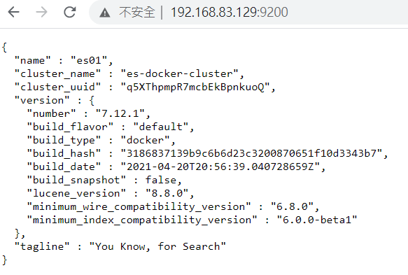
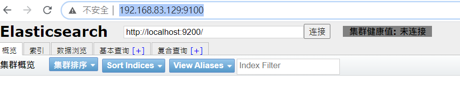
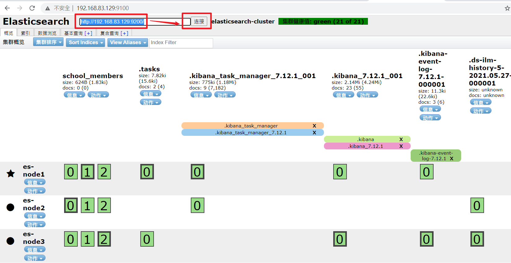
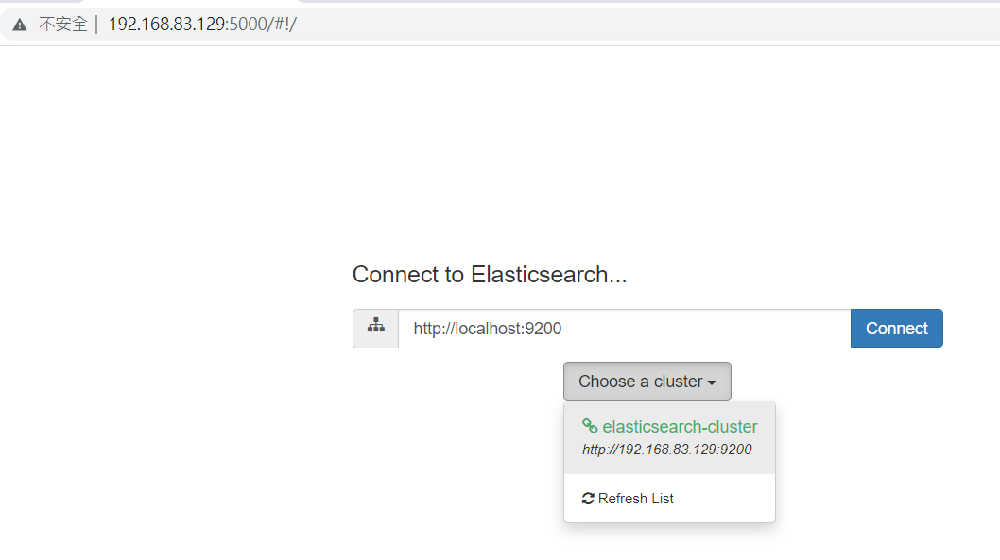

前言 因為專案上會使用log和記䤸一些分析，所以來研究一下
使用Docker來安裝 單節的裝法 先安裝docker和dockercompose
安裝Elasticsearch
1 sudo docker pull docker.elastic.co/elasticsearch/elasticsearch:7.12.1
啟動Elasticsearch
1 sudo docker run -p 9200:9200 -p 9300:9300 -e "discovery.type=single-node" docker.elastic.co/elasticsearch/elasticsearch:7.12.1
安裝好 ElasticSearch之後，需先設定 vm.max_map_count值，至少需大於262144這個值，設定需在 /etc/sysctl.conf 檔案中加入以下這行：
1 sudo vim /etc/sysctl.conf
如果要在線上系統直接啟動設定，可以執行以下這行指令：
1 sudo sysctl -w vm.max_map_count=262144
安裝Kibana
1 sudo docker pull docker.elastic.co/kibana/kibana:7.12.1
安裝Logstash
1 sudo docker pull docker.elastic.co/logstash/logstash:7.12.1
以docker compose來啟動和安裝
建立docker資料夾
1 2 3 sudo mkdir -p /data/docker/elasticsearch cd /data/docker sudo chmod -R 777 elasticsearch/
建立目錄為了docker compose
1 2 3 cd ~ mkdir -p docker/elastic cd docker/elastic
建立 docker-compose.yml
docker-compose.yml內容
1 2 3 4 5 6 7 8 9 10 11 12 13 14 15 16 17 18 19 20 21 22 23 24 25 26 27 28 29 30 31 32 33 34 35 36 37 38 39 40 41 42 43 44 45 46 47 48 49 50 51 52 53 54 55 56 57 58 59 60 61 62 63 64 65 66 67 68 69 70 71 72 73 74 75 76 77 78 79 80 version: '3' services: es01: image: docker.elastic.co/elasticsearch/elasticsearch:7.12.1 container_name: es01 ports: - "9200:9200" - "9300:9300" environment: - "node.name=es01" - "cluster.name=es-docker-cluster" - "discovery.seed_hosts=es02,es03" - "cluster.initial_master_nodes=es01" - "node.max_local_storage_nodes=3" - "http.cors.allow-origin=*" - "http.cors.enabled=true" - "discovery.zen.minimum_master_nodes=2" - "ES_JAVA_OPTS=-Xms256m -Xmx256m" volumes: - "/data/docker/elasticsearch:/usr/share/elasticsearch/data" networks: - elk es02: image: docker.elastic.co/elasticsearch/elasticsearch:7.12.1 container_name: es02 environment: - "node.name=es02" - "cluster.name=es-docker-cluster" - "discovery.seed_hosts=es01,es03" - "cluster.initial_master_nodes=es01,es02,es03" - "node.max_local_storage_nodes=3" - "http.cors.allow-origin=*" - "http.cors.enabled=true" - "discovery.zen.minimum_master_nodes=2" - "ES_JAVA_OPTS=-Xms256m -Xmx256m" volumes: - "/data/docker/elasticsearch:/usr/share/elasticsearch/data" networks: - elk es03: image: docker.elastic.co/elasticsearch/elasticsearch:7.12.1 container_name: es03 environment: - "node.name=es03" - "cluster.name=es-docker-cluster" - "discovery.seed_hosts=es01,es02" - "cluster.initial_master_nodes=es01,es02,es03" - "node.max_local_storage_nodes=3" - "http.cors.allow-origin=*" - "http.cors.enabled=true" - "discovery.zen.minimum_master_nodes=2" - "ES_JAVA_OPTS=-Xms256m -Xmx256m" volumes: - "/data/docker/elasticsearch:/usr/share/elasticsearch/data" networks: - elk networks: elk: driver: bridge
測試以網頁，輸入虛擬機的IP
1 http://192.168.83.129:9200/_cat/nodes
如果看到下面的網頁

或是在虛擬機下輸入curl http://127.0.0.1:9200/_cat/nodes
1 2 3 172.19.0.3 36 83 0 0.02 0.49 0.68 cdfhilmrstw * es01 172.19.0.2 51 83 0 0.02 0.49 0.68 cdfhilmrstw - es03 172.19.0.4 40 83 0 0.02 0.49 0.68 cdfhilmrstw - es02
叢集的裝法 在上面有設定 vm.max_map_count的值，一樣要設定
資料的存放位置
建立docker資料夾
1 2 3 sudo mkdir -p /data/docker/elasticsearch cd /data/docker sudo chmod -R 777 elasticsearch/
先在使用者下建立如下的資料夾
1 /home/ttom/docker/elastic
在使用者的目錄(/home/ttom/docker/elastic)分別建立三個資料夾和檔案
1 2 3 4 5 6 7 8 9 ├── es01 │ ├── docker-compose.yml │ └── es1.yml ├── es02 │ ├── docker-compose.yml │ └── es2.yml └── es03 ├── docker-compose.yml └── es3.yml
es01 1 2 vim docker-compose.yml vim es1.yml
docker-compose.yml的內容
1 2 3 4 5 6 7 8 9 10 11 12 13 14 version: '3' services: es01: image: docker.elastic.co/elasticsearch/elasticsearch:7.12.1 container_name: es01 ports: - "9200:9200" - "9300:9300" environment: - "node.max_local_storage_nodes=3" - "ES_JAVA_OPTS=-Xms256m -Xmx256m" volumes: - "/home/ttom/docker/elastic/es01/es1.yml:/usr/share/elasticsearch/config/elasticsearch.yml" - "/data/docker/elasticsearch:/usr/share/elasticsearch/data"
node.max_local_storage_nodes #一台當3台使用
es1.yml的內容
1 2 3 4 5 6 7 8 9 10 11 12 13 cluster.name: elasticsearch-cluster node.name: es-node1 cluster.initial_master_nodes: es-node1,es-node2,es-node3 network.host: 0.0 .0 .0 network.publish_host: 192.168 .83 .129 http.port: 9200 transport.tcp.port: 9300 http.cors.enabled: true http.cors.allow-origin: "*" node.master: true node.data: true discovery.zen.ping.unicast.hosts: ["192.168.83.129:9300","192.168.83.129:9301","192.168.83.129:9302"] discovery.zen.minimum_master_nodes: 1
cluster.initial_master_nodes 設定主節點
network.publish_host 主機的ip
http.port http的port
transport.tcp.port 互相溝通的port
discovery.zen.ping.unicast.hosts 所有節點
es02 1 2 vim docker-compose.yml vim es2.yaml
docker-compose.yml的內容
1 2 3 4 5 6 7 8 9 10 11 12 13 14 version: '3' services: es01: image: docker.elastic.co/elasticsearch/elasticsearch:7.12.1 container_name: es02 ports: - "9201:9201" - "9301:9301" environment: - "node.max_local_storage_nodes=3" - "ES_JAVA_OPTS=-Xms256m -Xmx256m" volumes: - "/home/ttom/docker/elastic/es02/es2.yml:/usr/share/elasticsearch/config/elasticsearch.yml" - "/data/docker/elasticsearch:/usr/share/elasticsearch/data"
es2.yml的內容
1 2 3 4 5 6 7 8 9 10 11 12 13 cluster.name: elasticsearch-cluster node.name: es-node2 cluster.initial_master_nodes: es-node1,es-node2,es-node3 network.host: 0.0 .0 .0 network.publish_host: 192.168 .83 .129 http.port: 9201 transport.tcp.port: 9301 http.cors.enabled: true http.cors.allow-origin: "*" node.master: true node.data: true discovery.zen.ping.unicast.hosts: ["192.168.83.129:9300","192.168.83.129:9301","192.168.83.129:9302"] discovery.zen.minimum_master_nodes: 1
es03 1 2 vim docker-compose.yml vim es3.yaml
docker-compose.yml的內容
1 2 3 4 5 6 7 8 9 10 11 12 13 14 version: '3' services: es01: image: docker.elastic.co/elasticsearch/elasticsearch:7.12.1 container_name: es03 ports: - "9202:9202" - "9302:9302" environment: - "node.max_local_storage_nodes=3" - "ES_JAVA_OPTS=-Xms256m -Xmx256m" volumes: - "/home/ttom/docker/elastic/es03/es3.yml:/usr/share/elasticsearch/config/elasticsearch.yml" - "/data/docker/elasticsearch:/usr/share/elasticsearch/data"
es3.yml的內容
1 2 3 4 5 6 7 8 9 10 11 12 13 cluster.name: elasticsearch-cluster node.name: es-node3 cluster.initial_master_nodes: es-node1,es-node2,es-node3 network.host: 0.0 .0 .0 network.publish_host: 192.168 .83 .129 http.port: 9202 transport.tcp.port: 9302 http.cors.enabled: true http.cors.allow-origin: "*" node.master: true node.data: true discovery.zen.ping.unicast.hosts: ["192.168.83.129:9300","192.168.83.129:9301","192.168.83.129:9302"] discovery.zen.minimum_master_nodes: 1
測試
1 2 curl http://192.168.83.129:9200 curl http://192.168.83.129:9200/_cat/nodes
安裝elasticsearch-head(支援度有問題) 目前不使用
可以簡單操作的圖形介面
1 2 3 4 cd ~ cd docker mkdir elasticsearch-head cd elasticsearch-head
建立docker-compose.yml
docker-compose.yml內容
1 2 3 4 5 6 7 version: '3' services: es01: image: docker.io/mobz/elasticsearch-head:5 container_name: eshead ports: - "9100:9100"
在瀏覽器上輸入http://192.168.83.129:9100/會有下面的畫面就是成功了

在下面輸入http://192.168.83.129:9200/按下連接會有下面的畫面

安裝ElasticHQ 可以簡單操作的圖形介面
1 2 3 4 cd ~ cd docker mkdir elastic-hq cd elastic-hq
建立docker-compose.yml
docker-compose.yml內容
1 2 3 4 5 6 7 version: '3' services: es01: image: docker.io/elastichq/elasticsearch-hq container_name: eshq ports: - "5000:5000"
在瀏覽器上輸入http://192.168.83.129:5000/會有下面的畫面就是成功了

安裝Kibana 1 2 3 4 cd ~ cd docker mkdir kibana cd kibana/
建立kibana.yml
/home/ubuntu/docker/kibana
1 2 3 4 5 6 7 8 9 10 11 12 13 server.host: "0.0.0.0" server.port: 5601 server.name: "kibana" elasticsearch.hosts: ["http://10.4.7.135:9200/"] xpack: apm.ui.enabled: false graph.enabled: false ml.enabled: false monitoring.enabled: false reporting.enabled: false security.enabled: false grokdebugger.enabled: false searchprofiler.enabled: false
ps.如果之後沒有要用到xpack，xpack的部分可以不用加上
建立docker-compose.yml
docker-compose.yml的內容
1 2 3 4 5 6 7 8 9 version: '3' services: kib01: image: docker.elastic.co/kibana/kibana:7.12.1 container_name: kib01 ports: - "5601:5601" volumes: - "/home/ubuntu/docker/kibana/kibana.yml:/usr/share/kibana/config/kibana.yml"
測試
初步檢索 可以使用postman來發送
__cat_
1 2 3 4 GET /_cat/nodes :查看所有節點 GET /_cat/health :查看es健康狀況 GET /_cat/master :查看主節點 GET /_cat/indices :查看所有索引 show database;
索引一個文檔(保存)
下載測試數據 1 2 3 4 5 6 7 8 # 莎士比亞經典作品 wget https://download.elastic.co/demos/kibana/gettingstarted/shakespeare_6.0.json # 一組虛擬生成的帳戶數據 wget https://download.elastic.co/demos/kibana/gettingstarted/accounts.zip # 一組虛擬生成的日志數據 wget https://download.elastic.co/demos/kibana/gettingstarted/logs.jsonl.gz
載入數據
1 2 3 4 5 curl -H 'Content-Type: application/x-ndjson' -XPOST '10.4.7.135:9200/bank/account/_bulk?pretty' --data-binary @accounts.json curl -H 'Content-Type: application/x-ndjson' -XPOST '10.4.7.135:9200/shakespeare/doc/_bulk?pretty' --data-binary @shakespeare_6.0.json curl -H 'Content-Type: application/x-ndjson' -XPOST '10.4.7.135:9200/_bulk?pretty' --data-binary @logs.jsonl
查詢all
Kibana測試 1 2 3 4 5 6 7 8 9 10 11 12 13 14 15 16 17 18 19 20 21 22 23 24 25 26 27 28 29 30 31 32 33 34 35 36 37 38 39 40 41 42 43 44 45 46 47 48 49 50 51 52 GET /school/_search { "query" : { "match_all" : { } } } #指定搜尋name=王小明的文檔 fail GET /school/_search { "query" : { "term" : { "name" : "王小明" } } } #搜尋name=王小明跟name=許小美 fail GET /school/_search { "query" : { "terms" : { "name" : [ "王小明" , "許小美" ] } } } # 搜尋name包含“王”、“小”，“明” GET /school/_search { "query" : { "match" : { "name" : "王小明" } } } #搜尋age=20的文檔 GET /school/_search { "query" : { "bool" : { "must" : { "term" : { "age" : 20 } } } } }
參考資料 Python&Elasticsearch 入門 系列
安裝Filebeat 使用log的收集器
因為測試的關系所以要建立多個Filebeat來測試所以在docker的目錄下建立一個資料夾filebeat
1 2 3 4 cd ~cd dockermkdir filebeat /home/ubuntu/docker/filebeat
先來建立資料夾fb01
1 2 3 cd filebeatmkdir fb01 cd fb01
建立docker-compose.yml
建立docker-compose.yml
內容
1 2 3 4 5 6 7 8 version: "3" services: fb01: image: docker.elastic.co/beats/filebeat:7.12.1 container_name: fb01 entrypoint: "filebeat -e -v -strict.perms=false" volumes: - ./filebeat.yml:/usr/share/filebeat/filebeat.yml:ro
在它的目錄下建立filebeat.yml
內容(console輸出不工作)
1 2 3 4 5 filebeat.inputs: - type: stdin enable: true output.console: pretty: true enable: true
測試Filebeat 使用python將log以tpc的方式來傳送給Filebeat,而Filebeat將傳送給logstash,而logstash傳送es
python=>filebeat=>logstash=>es
測試的python
1 2 3 4 5 6 7 8 9 10 11 12 13 14 15 16 17 18 19 20 21 22 23 24 25 26 27 28 29 30 31 32 33 34 35 import loggingimport jsonimport socketimport timeimport datetime logging.basicConfig(level=logging.DEBUG, format='%(asctime)s.%(msecs)03d [%(lineno)s] [PID %(process)d] %(levelname)-7s %(message)s ' , ) HOST = '192.168.83.129' PORT = 9000 def heartbeattcp () : s = socket.socket(socket.AF_INET, socket.SOCK_STREAM) s.connect((HOST, PORT)) nowTime = datetime.datetime.now() sendmessage = f"[{nowTime} ] ERROR, ClientIP:123.128.251.73, SeverIP:172.16.152.104, testmessage[測試訊息]#逃避雖可恥但有用#新垣結衣我老婆" outdata = f'{sendmessage} ' logging.info(f"send:{outdata} " ) s.send(outdata.encode()) s.close() def hearbeatloop () : while True : heartbeattcp() time.sleep(1 ) if __name__ == "__main__" : hearbeatloop()
設定filebeat.yml
1 2 3 4 5 6 7 8 9 10 11 12 13 14 15 16 17 ``` ## 安裝Logstash 因為之後會使用到記錄log或是gps的資料，所以來研究一下 因為可以建立多個Logstash,所在在docker的目錄下建立一個資料夾`logstash` ```bash cd ~ cd docker/ mkdir logstash /home/ttom/docker/logstash
先來建立資料夾ls01
1 2 3 cd logstashmkdir ls01 cd ls01
建立docker-compose.yml
內容
1 2 3 4 5 6 7 8 9 10 11 version: '3' services: ls01: image: logstash:7.12.1 container_name: ls01 ports: - "9600:9600" - "5044:5044" volumes: - ./logstash.conf:/usr/share/logstash/pipeline/logstash.conf:rw - ./logstash.yml:/usr/share/logstash/config/logstash.yml
在它的目錄下建立logstash.yml
內容
1 2 3 4 5 6 xpack.monitoring.elasticsearch.hosts: - http://192.168.83.129:9200 xpack.monitoring.enabled: true
在它的目錄下建立logstash.conf
內容
1 2 3 4 5 6 7 8 9 10 11 12 13 14 15 16 17 input { tcp { port => 5044 } } output { elasticsearch { hosts => ["http://192.168.83.129:9200"] } }
在console下輸入
1 echo "test" | nc localhost 5044
如果在Kibana有看到時，就是正常的
ELK環境建置與介紹
【拆分版】Docker-compose構建Logstash多例項
測試logstash 以python來傳送log資料，之後在logstash的console來顯示
在此強烈推薦一個實用的 grok 檢驗工具 grokdebug 給大家，有了它我們可以快速地完成 grok表達語法的組成並立即看到過濾結果。
修改logstash.conf的內容
1 2 3 4 5 6 7 8 9 10 11 12 13 14 15 16 17 18 19 20 input { tcp { port => 5044 type => "testFilter" } } filter { grok { match => { "message" => "\[(?<date>.+?)\] %{LOGLEVEL:level}, ClientIP:%{IPV4:client_ip}, SeverIP:%{IPV4:server_ip}, %{GREEDYDATA:orgmessage}" } } } output { stdout { codec => rubydebug } }
在測試的python
1 2 3 4 5 6 7 8 9 10 11 12 13 14 15 16 17 18 19 20 21 22 23 24 25 26 27 28 29 30 31 32 33 34 35 import loggingimport jsonimport socketimport timeimport datetime logging.basicConfig(level=logging.DEBUG, format='%(asctime)s.%(msecs)03d [%(lineno)s] [PID %(process)d] %(levelname)-7s %(message)s ' , ) HOST = '192.168.83.129' PORT = 5044 def heartbeattcp () : s = socket.socket(socket.AF_INET, socket.SOCK_STREAM) s.connect((HOST, PORT)) nowTime = datetime.datetime.now() sendmessage = f"[{nowTime} ] ERROR, ClientIP:123.128.251.73, SeverIP:172.16.152.104, testmessage[測試訊息]#逃避雖可恥但有用#新垣結衣我老婆" outdata = f'{sendmessage} ' logging.info(f"send:{outdata} " ) s.send(outdata.encode()) s.close() def hearbeatloop () : while True : heartbeattcp() time.sleep(1 ) if __name__ == "__main__" : hearbeatloop()
另一版kafka(未測試)
1 2 3 4 5 6 7 8 9 10 11 12 13 14 15 16 17 18 19 20 21 22 23 24 input { kafka { bootstrap_servers => "kafka1:9092,kafka2:9093,kafka3:9094" #kafka叢集節點列表 topics => ["all_logs"] #訂閱名為all_logs的topic group_id => "logstash" #設定組為logstash codec => json #轉換為json } } filter { } output { elasticsearch { hosts => ["10.2.114.110:9204"] #es的路徑 index => "all-logs-%{+YYYY.MM.dd}" #輸出到es的索引名稱，這裡是每天一個索引 } stdout { codec => rubydebug } }